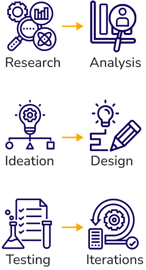
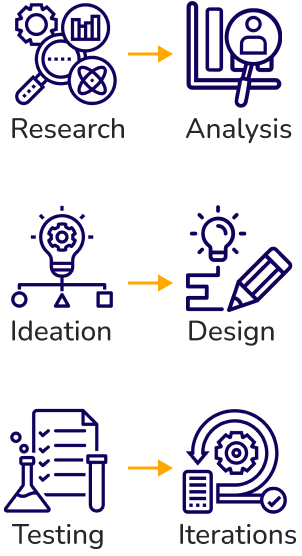
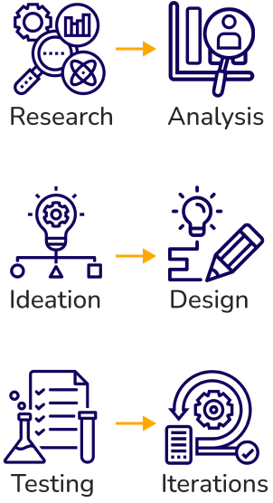

MyDIY
Case Study
MyDIY was a collaboration with 3 teammates completed in 2022 with a 3 week deadline. My involvement included spearheading the research, storyboarding, redesign, and user testing, and iterations.
UI/UX Designer
 

Online Survey:

Overview
Potential DIYers are discouraged from trying new projects due to a lack of supportive, instructional resources available to them.
MyDIY is a mobile app that helps users achieve their project goals and connects them to a network of other DIYers.
My Process

Research & Analysis
A thorough market analysis was conducted to include, market analysis, potential users, and competitors.
User Interviews:
- 8 user interviews with candidates that corresponded to the proto-persona
- 15 open ended questions with follow-ups
Online Survey:
- 5 questions were polled with Google Forms
Affinity Diagram
We organized our interview feedback into four categories - pain points, motivations, resources utilized, and wants. The biggest pain point we identified was a lack of resources.
The interviews showed that the biggest factors for a DIY is to save money and a sense of accomplishment
Based on the interviews, Youtube is a main resource, and users would like the ability to communicate and have more user friendly resources.
Competitor Analysis
We conducted a thorough competitor analysis to pinpoint differentiators and pain points in the market. We found there is a lack of dedicated DIY resources.
User Persona
Two user personas were created based on interviews and survey data, one to highlight avid uploaders and one to highlight frequent users.
curious
artistic
crafty
Valentina enjoys arts and crafts and is always inspired. She likes to use her creative and artistic abilities and sharing them with others. She frequently uses online platforms to share her art.
Ideation
Our user interviews confirmed the must-have and should-have features our app should offer, as well as ideas for future development.
We created a journey map and storyboard to discover additional potential roadblocks or pain points and opportunities.
Opportunities we found included:
- Links to the supplies
- Time estimate
- Cost savings for DIY project
User Flow
We created a chart that visualizes the flow of decisions users must make as they progress through the tasks to achieve their goals.
High priority changes included: Our main focus of our app is to streamline the design into a simplistic layout to allow the user to access every part of the app with just a few taps.
Wireframing & Lo-Fi
During our design approach. We focused on keeping user experience at the forefront. We asked ourselves what would make it easy for our users to navigate and find what they were looking for.
Our vision was allowing easy searching while getting inspiration to take on future projects and a connection to community DIY members.
Style Tile
Our Style Guide options included formatting, color schemes, and button options that would be easily recognizable by users.
We wanted to continue consistency throughout our project while making the app appealing to users and spark inspiration.
Hi-Fi Prototype & Testing
During user testing, we uncovered new insights that allowed us to further ideate and re-work for our final design.
- We found the tipping amounts were not optimal for user experience.
- We also found our filter options were restricting user preferences.
- Our community slide was missing a post submission option.
- We placed an icon in the form of a trash can on our “my projects” page.
- We moved our tailored suggested options in the profile page.
Design Review & Iterations
We completed additional user testing to confirm design flaws, and explore what works & what needs to be adjusted or improved.